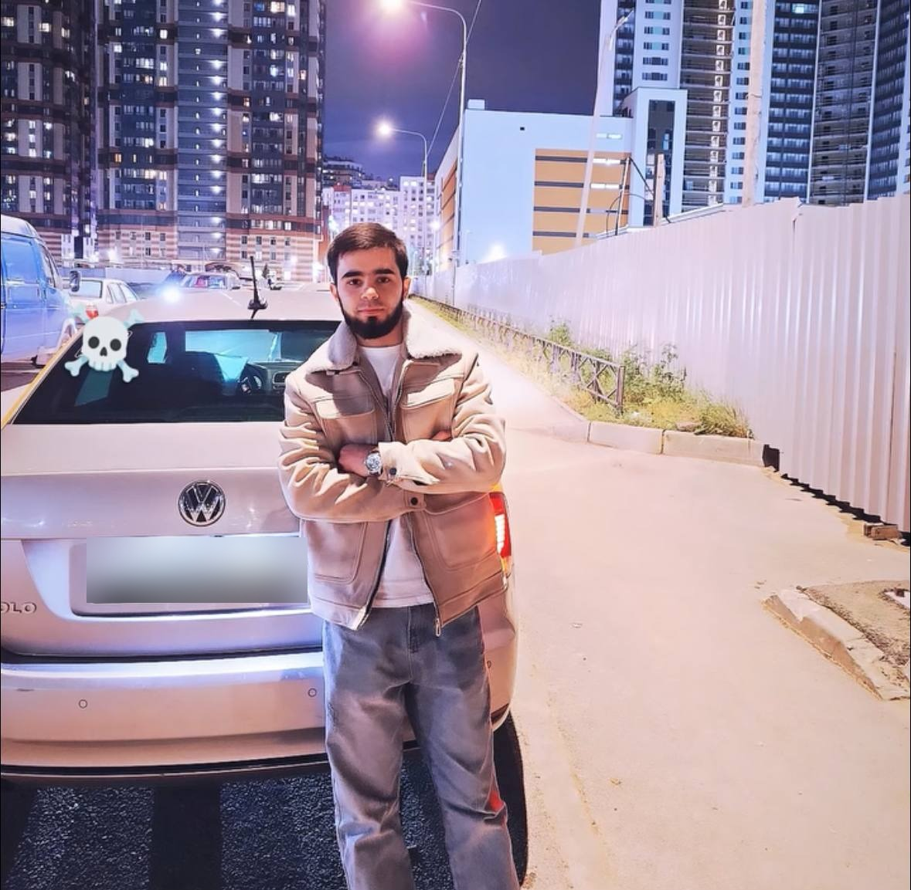

Персональная биография
Давлатов Мехроджиддин Бароталиевич
Личная страница
Страница содержит краткую биографическую информацию, сведения об образовании и публичный профиль в социальной сети.
Биография
Давлатов Мехроджиддин Бароталиевич родился в 2002 году в Шахринавском районе Республики Таджикистан. Получил высшее образование в Таджикском аграрном университете имени Шириншоха Шотемура по специальности «Механизация сельского хозяйства».
В настоящее время работает. Сведения о месте работы не публикуются.
Основные сведения
- Год рождения
- 2002
- Место рождения
- Шахринавский район, Республика Таджикистан
- Образование
- Высшее
- Учебное заведение
- Таджикский аграрный университет имени Шириншоха Шотемура
- Специальность
- Механизация сельского хозяйства
- Трудовая деятельность
- Работает; место работы не разглашается
- Место проживания
- Санкт-Петербург, Россия
- Языки
- Таджикский, узбекский, русский, английский
Социальные сети
Instagram: @_davlatov_o2_o8_